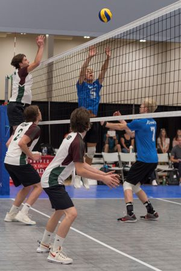
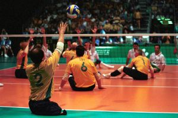

Indoor Volleyball
This is a common volleyball style people are playing nowadays. Indoor volleyball required team to have 6 players. Indoor volleyball is the most fast-paced volleyball games, It required player to be alert and great teamwork. The net height for indoor volleyball is 2.43 m which is quite tall.

Sitting Volleyball
Sitting volleyball is a famous sport in Paralympic sport. This sport is exclusively for individuals with physical impairments. The rules of sitting Volleyball are similar to indoor volleyball except for net height and ball size. The invention of this type of volleyball helps individuals with physical impairments to reintergate into sport.